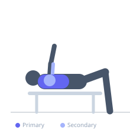
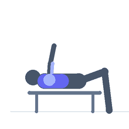

Exercise guide / Converging Plate-Loaded Chest Press
Converging Plate-Loaded Chest Press
The Converging Plate-Loaded Chest Press uses an independent-arm machine where each handle moves in a converging arc (the arms come together as they extend forward), mimicking the natural adduction component of the pectoral contraction. The plate-loaded design allows greater load than selectorized machines and the converging motion provides superior pectoral peak contraction.
Primary muscles
pectoralis major sternal
pectoralis major clavicular
Secondary muscles
deltoid anterior
triceps lateral head
Stabilizers
pectoralis minor
Equipment
Chest Press Machine


Starting position
- Load the machine with weight plates. Sit with back against the pad and grip the handles at chest level.
Setup
- Adjust the seat height so handles align with the mid-chest. Load plates evenly on each side. Use the starting pin to bring handles to the starting position if provided.
Steps
- Step 1: Grip both handles and press forward, allowing the arms to naturally converge toward the midline.
- Step 2: Fully extend the arms and squeeze the chest as the handles come together.
- Step 3: Return under control, allowing the arms to diverge back to the starting position.
- Step 4: Repeat without letting the weight stack touch at the bottom.
Coaching cues
- Let the arms come together at the top — squeeze the pecs hard
- Control the return — feel the stretch
Breathing
- Exhale as you press and handles converge. Inhale as you return.
Range of motion
- Full arm extension and convergence at front; return to full stretch of pectorals at back.
Tempo
- 3-1-2-1
Common mistakes
- Letting the weight stack slam at the bottom
- Not squeezing the chest at peak contraction when arms converge
Safety
- Load plates evenly — imbalanced loading creates asymmetric movement
- Use the starting pin to control the entry and exit safely under heavy loads
Training
- strength: 5–10 reps
- hypertrophy: 10–15 reps
- strength: 3–5 sets
- hypertrophy: 3–4 sets
- Rest: {'strength': 150, 'hypertrophy': 90}